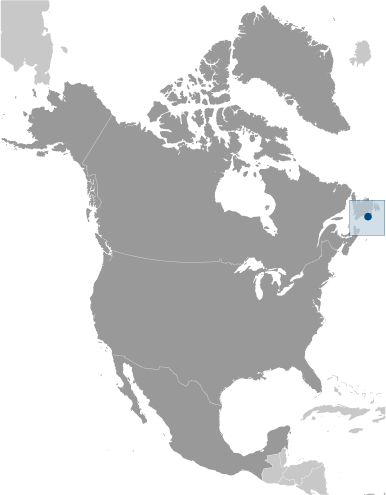

North America :: SAINT PIERRE AND MIQUELON
Introduction :: SAINT PIERRE AND MIQUELON
-
First settled by the French in the early 17th century, the islands represent the sole remaining vestige of France's once vast North American possessions. They attained the status of an overseas collectivity in 2003.
Geography :: SAINT PIERRE AND MIQUELON
-
Northern North America, islands in the North Atlantic Ocean, south of Newfoundland (Canada)46 50 N, 56 20 WNorth Americatotal: 242 sq kmland: 242 sq kmwater: 0 sq kmnote: includes eight small islands in the Saint Pierre and the Miquelon groupscountry comparison to the world: 214one and half times the size of Washington, DC0 km120 kmterritorial sea: 12 nmexclusive economic zone: 200 nmcold and wet, with considerable mist and fog; spring and autumn are often windymostly barren rockmean elevation: NAelevation extremes: lowest point: Atlantic Ocean 0 mhighest point: Morne de la Grande Montagne 240 mfish, deepwater portsagricultural land: 8.7%arable land 8.7%; permanent crops 0%; permanent pasture 0%forest: 12.5%other: 78.8% (2011 est.)0 sq km (2012)most of the population is found on Saint Pierre Island; a small settlement is located on the north end of Miquelon Islandpersistent fog throughout the year can be a maritime hazardrecent test drilling for oil in waters around Saint Pierre and Miquelon may bring future development that would impact the environmentvegetation scanty; the islands are actually part of the northern Appalachians along with Newfoundland
People and Society :: SAINT PIERRE AND MIQUELON
-
5,533 (July 2017 est.)country comparison to the world: 227noun: Frenchman(men), Frenchwoman(women)adjective: FrenchBasques and Bretons (French fishermen)French (official)Roman Catholic 99%, other 1%0-14 years: 15.29% (male 437/female 409)15-24 years: 9.05% (male 258/female 243)25-54 years: 41.79% (male 1,137/female 1,175)55-64 years: 13.54% (male 388/female 361)65 years and over: 20.33% (male 477/female 648) (2017 est.)total: 46.5 yearsmale: 46 yearsfemale: 47 years (2017 est.)country comparison to the world: 4-1.08% (2017 est.)country comparison to the world: 2327.1 births/1,000 population (2017 est.)country comparison to the world: 2259.9 deaths/1,000 population (2017 est.)country comparison to the world: 42-8 migrant(s)/1,000 population (2017 est.)country comparison to the world: 207most of the population is found on Saint Pierre Island; a small settlement is located on the north end of Miquelon Islandurban population: 90.6% of total population (2017)rate of urbanization: 0.09% annual rate of change (2015-20 est.)SAINT-PIERRE (capital) 5,000 (2014)at birth: 1.05 male(s)/female0-14 years: 1.06 male(s)/female15-24 years: 1.08 male(s)/female25-54 years: 0.97 male(s)/female55-64 years: 1.1 male(s)/female65 years and over: 0.72 male(s)/femaletotal population: 0.95 male(s)/female (2016 est.)total: 6.5 deaths/1,000 live birthsmale: 7.5 deaths/1,000 live birthsfemale: 5.4 deaths/1,000 live births (2017 est.)country comparison to the world: 165total population: 80.6 yearsmale: 78.3 yearsfemale: 83.1 years (2017 est.)country comparison to the world: 371.57 children born/woman (2017 est.)country comparison to the world: 186NANANA
Government :: SAINT PIERRE AND MIQUELON
-
conventional long form: Territorial Collectivity of Saint Pierre and Miquelonconventional short form: Saint Pierre and Miquelonlocal long form: Departement de Saint-Pierre et Miquelonlocal short form: Saint-Pierre et Miquelonetymology: Saint-Pierre is named after Saint PETER, the patron saint of fishermen; Miquelon may be a corruption of the Basque name Mikelonoverseas collectivity of Franceparliamentary democracy (Territorial Council); overseas collectivity of Francename: Saint-Pierregeographic coordinates: 46 46 N, 56 11 Wtime difference: UTC-3 (2 hours ahead of Washington, DC, during Standard Time)daylight saving time: +1hr, begins second Sunday in March; ends first Sunday in Novembernone (territorial overseas collectivity of France); note - there are no first-order administrative divisions as defined by the US Government, but there are 2 communes at the second order - Saint Pierre, Miquelonnone (overseas collectivity collectivity of France; has been under French control since 1763)Fete de la Federation, 14 July (1790)4 October 1958 (French Constitution)French civil lawsee France18 years of age; universalchief of state: President Emmanuel MACRON (since 14 May 2017); represented by Prefect Jean-Regis BORIUS (since 2016)head of government: President of Territorial Council Stephane ARTANO (since 21 February 2007)cabinet: Le Cabinet du Prefetelections/appointments: French president directly elected by absolute majority popular vote in 2 rounds if needed for a 5-year term (eligible for a second term); election last held on 23 April and 6 May 2017 (next to be held in 2022); prefect appointed by French president on the advice of French Ministry of Interiordescription: unicameral Territorial Council or Conseil Territorial (19 seats - 15 from Saint Pierre and 4 from Miquelon; members directly elected in single-seat constituencies by absolute majority vote in 2 rounds if needed to serve 6-year terms)note: Saint Pierre and Miquelon elect 1 member to the French Senate; elections last held on 28 September 2014 (next to be held not later than September 2017); results - percent of vote by party - NA; seats by party - AD 1 (affiliated with UMP); Saint Pierre and Miquelon also elects 1 member to the French National Assembly; elections last held on 17 June 2012 (next to be held by June 2017); results - percent of vote by party - NA; seats by party - Ensemble pour l'Avenir 1 (affiliated with PRG)elections: elections last held on 19 March 2017 (next to be held in March 2023)election results: percent of vote by party - AD 70.2%, Cap sur l'Avenir 29.8%; seats by party - AD 17, Cap sur l'Avenir 2highest court(s): Superior Tribunal of Appeals or Tribunal Superieur d'Appel (composition NA)judge selection and term of office: judge selection and tenure NAsubordinate courts: NAArchipelago Tomorrow or AD (affiliated with UMP)Cap sur l'Avenir [Annick GIRARDIN] (affiliated with Left Radical Party)Togerther for the Future (Ensemble pour l'Avenir) (affiliated with PRG)SPM ensembleNAUPU, WFTU (NGOs)none (territorial overseas collectivity of France)none (overseas collectivity of France)a yellow three-masted sailing ship facing the hoist side rides on a blue background with scattered, white, wavy lines under the ship; a continuous black-over-white wavy line divides the ship from the white wavy lines; on the hoist side, a vertical band is divided into three parts: the top part (called ikkurina) is red with a green diagonal cross extending to the corners overlaid by a white cross dividing the rectangle into four sections; the middle part has a white background with an ermine pattern; the third part has a red background with two stylized yellow lions outlined in black, one above the other; these three heraldic arms represent settlement by colonists from the Basque Country (top), Brittany, and Normandy; the blue on the main portion of the flag symbolizes the Atlantic Ocean and the stylized ship represents the Grande Hermine in which Jacques Cartier "discovered" the islands in 1536note: the flag of France used for official occasions16th-century sailing shipnote: as a collectivity of France, "La Marseillaise" is official (see France)
Economy :: SAINT PIERRE AND MIQUELON
-
The inhabitants have traditionally earned their livelihood by fishing and by servicing fishing fleets operating off the coast of Newfoundland. The economy has been declining, however, because of disputes with Canada over fishing quotas and a steady decline in the number of ships stopping at Saint Pierre.The government hopes an expansion of tourism will boost economic prospects. Fish farming, crab fishing, and agriculture are being developed to diversify the local economy. Recent test drilling for oil may pave the way for development of the energy sector.$215.3 million (2006 est.)note: supplemented by annual payments from France of about $60 millioncountry comparison to the world: 219$215.3 million (2006 est.)NA%$34,900 (2006 est.)country comparison to the world: 56agriculture: 2%industry: 15%services: 83% (2006 est.)vegetables; poultry, cattle, sheep, pigs; fishfish processing and supply base for fishing fleets; tourismNA%3,194 (2006)country comparison to the world: 225agriculture: 18%industry: 41%services: 41% (1996)9.9% (2008 est.)country comparison to the world: 131NA%lowest 10%: NA%highest 10%: NA%revenues: $70 millionexpenditures: $60 million (1996 est.)32.5% of GDP (1996 est.)country comparison to the world: 664.6% of GDP (1996 est.)country comparison to the world: 8calendar year4.5% (2010)8.1% (2005)country comparison to the world: 169$6.641 million (2010 est.)$5.5 million (2005 est.)country comparison to the world: 217fish and fish products, soybeans, animal feed, mollusks and crustaceans, fox and mink pelts$95.35 million (2010 est.)$68.2 million (2005 est.)country comparison to the world: 217meat, clothing, fuel, electrical equipment, machinery, building materials$NAeuros (EUR) per US dollar -0.9214 (2016 est.)0.885 (2015 est.)0.885 (2014 est.)0.7634 (2013 est.)0.7752 (2012 est.)
Energy :: SAINT PIERRE AND MIQUELON
-
47 million kWh (2015 est.)country comparison to the world: 20843.71 million kWh (2015 est.)country comparison to the world: 2060 kWh (2016 est.)country comparison to the world: 1910 kWh (2016 est.)country comparison to the world: 19527,600 kW (2015 est.)country comparison to the world: 20397.8% of total installed capacity (2015 est.)country comparison to the world: 400% of total installed capacity (2015 est.)country comparison to the world: 1760% of total installed capacity (2015 est.)country comparison to the world: 1992.2% of total installed capacity (2015 est.)country comparison to the world: 1170 bbl/day (2016 est.)country comparison to the world: 1880 bbl/day (2014 est.)country comparison to the world: 1830 bbl/day (2014 est.)country comparison to the world: 1840 bbl (1 January 2017 es)country comparison to the world: 1860 bbl/day (2014 est.)country comparison to the world: 192630 bbl/day (2015 est.)country comparison to the world: 2080 bbl/day (2014 est.)country comparison to the world: 193624.9 bbl/day (2014 est.)country comparison to the world: 2040 cu m (2013 est.)country comparison to the world: 1890 cu m (2013 est.)country comparison to the world: 1260 cu m (2013 est.)country comparison to the world: 1750 cu m (2013 est.)country comparison to the world: 1820 cu m (1 January 2014 es)country comparison to the world: 189200,000 Mt (2013 est.)country comparison to the world: 198
Communications :: SAINT PIERRE AND MIQUELON
-
total subscriptions: 4,800subscriptions per 100 inhabitants: 80 (July 2016 est.)country comparison to the world: 209general assessment: adequateinternational: country code - 508; radiotelephone communication with most countries in the world; satellite earth station - 1 in French domestic satellite system2 TV stations with a third repeater station, all part of the French Overseas Network; radio stations on St. Pierre and on Miquelon are part of the French Overseas Network (2007).pmtotal: 4,500percent of population: 79.5% (July 2016 est.)
Transportation :: SAINT PIERRE AND MIQUELON
-
2 (2013)country comparison to the world: 205total: 21,524 to 2,437 m: 1914 to 1,523 m: 1 (2017)total: 117 kmpaved: 80 kmunpaved: 37 km (2009)country comparison to the world: 215major seaport(s): Saint-Pierre
Military and Security :: SAINT PIERRE AND MIQUELON
-
defense is the responsibility of France
Transnational Issues :: SAINT PIERRE AND MIQUELON
-
none